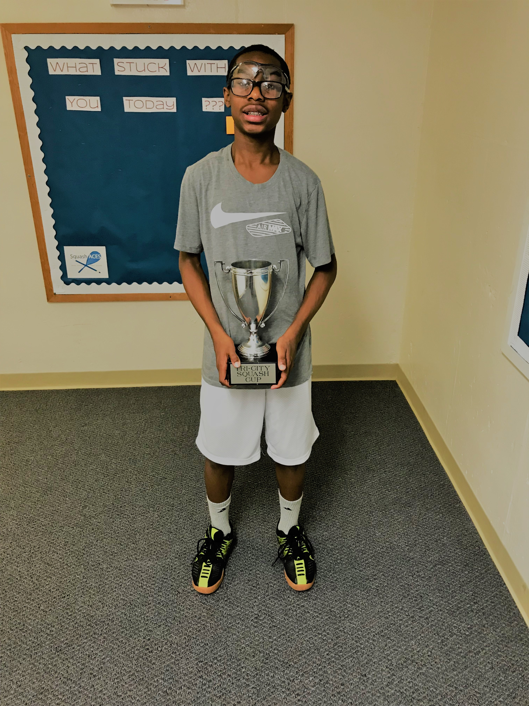

I am Brandon Hines I am a young male from Philadelphia PA. I go to G.W. Carver High School of Engineering and Science and I am heading into the 10th grade. At Carver each freshman is put into a health class. This health class teaches us about things that our parents and other adults shielded us from as children. They taught us about the various types of STDs and STIs and how to avoid contracting them. One that stood out to me was gonorrhea since it wasn’t as bad as aids and was curable but still definitely something you wanted to avoid getting. Since I’ve always kept that interest in the back of my mind I know that my groups project will succeed since we are working on something that’s known to the public and is an actual problem in our society.
